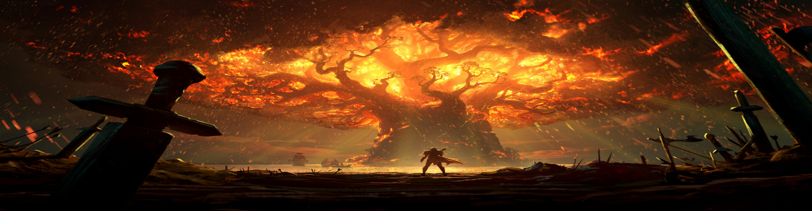
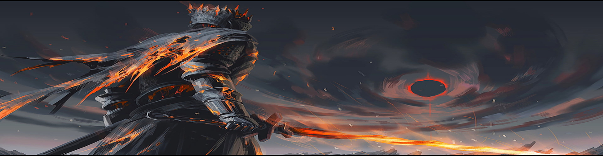

Elden Ring tiene lugar en las Tierras Intermedias, un continente ficticio gobernado por diferentes semidioses.
Anteriormente estaba gobernado por la Reina Marika la Eterna, la cual actuaba como guardiana del Círculo de Elden,
una poderosa fuerza que se manifiesta como el concepto físico del orden.


No cumple para nada con las expectativas Elden Ring; las supera con creces. From Software ha dado forma a una de las
obras más esperadas de los últimos años y tras decenas de uñas comidas por los fans, os puedo decir que la espera ha valido
la pena. Elden Ring es inabarcable, inmenso en muchos sentidos y es la locura de Hidetaka Miyazaki totalmente desatada.